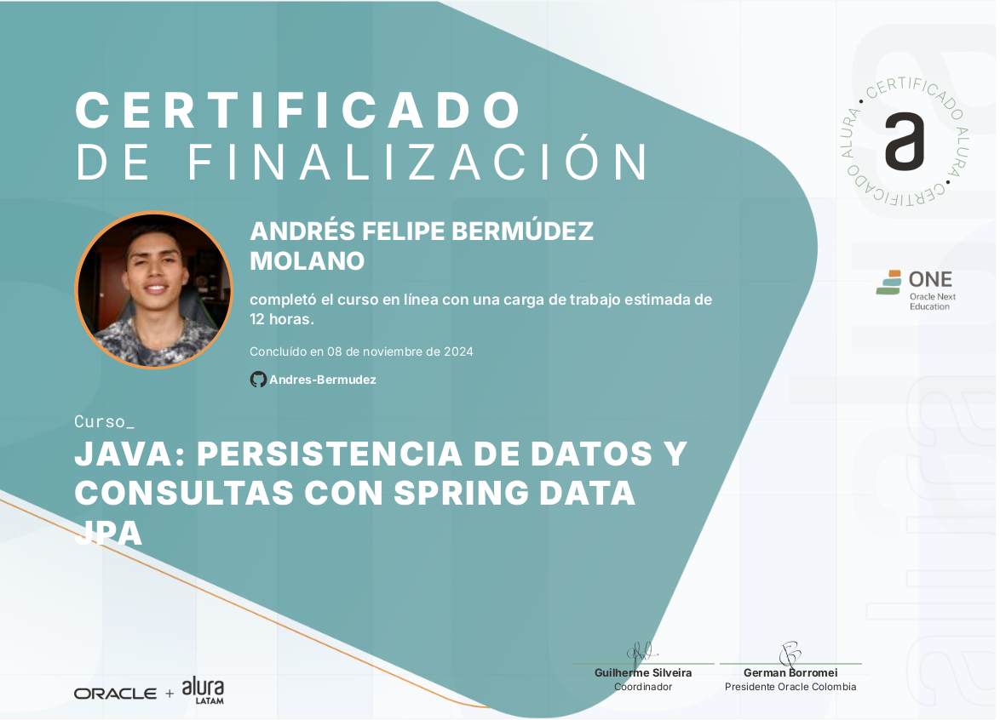
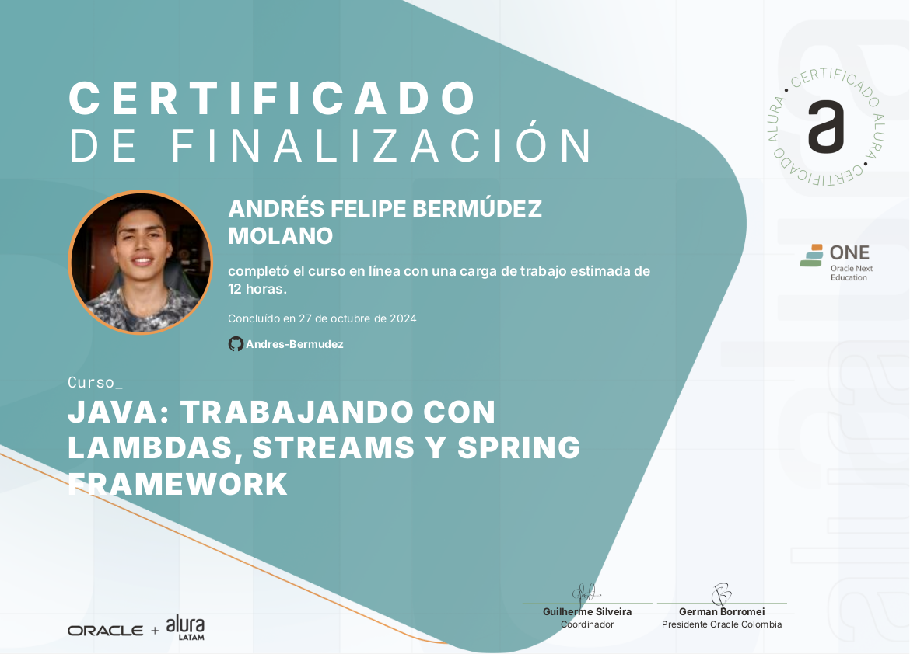
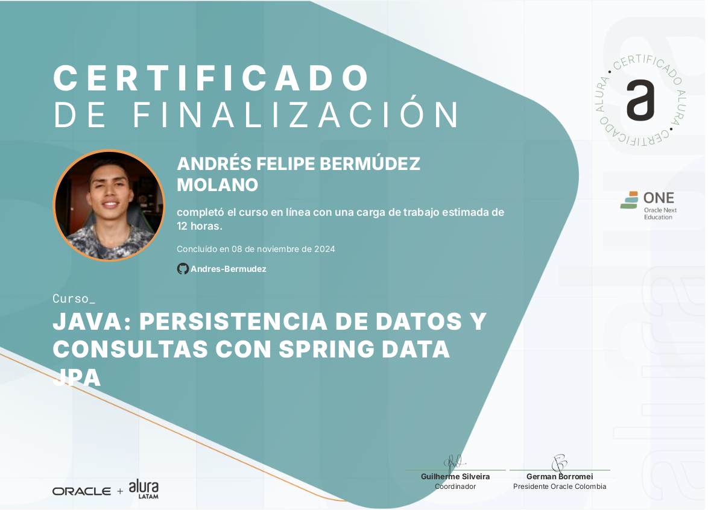
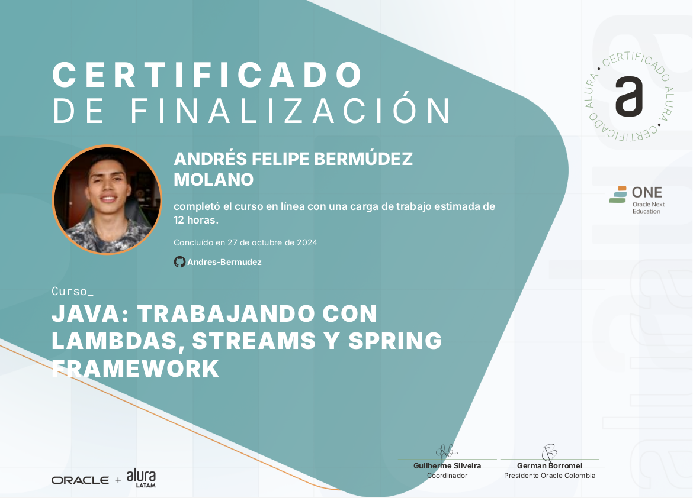
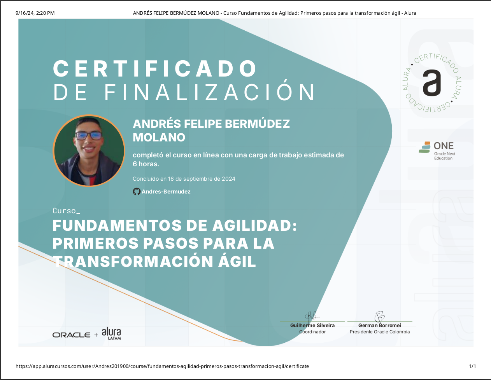
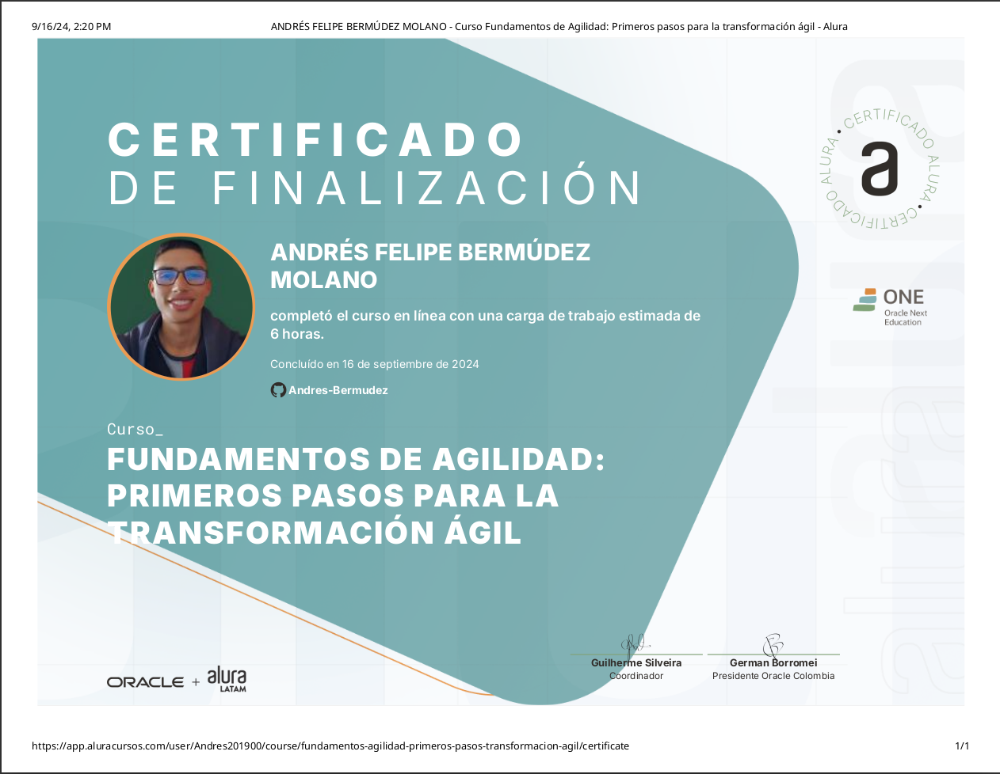
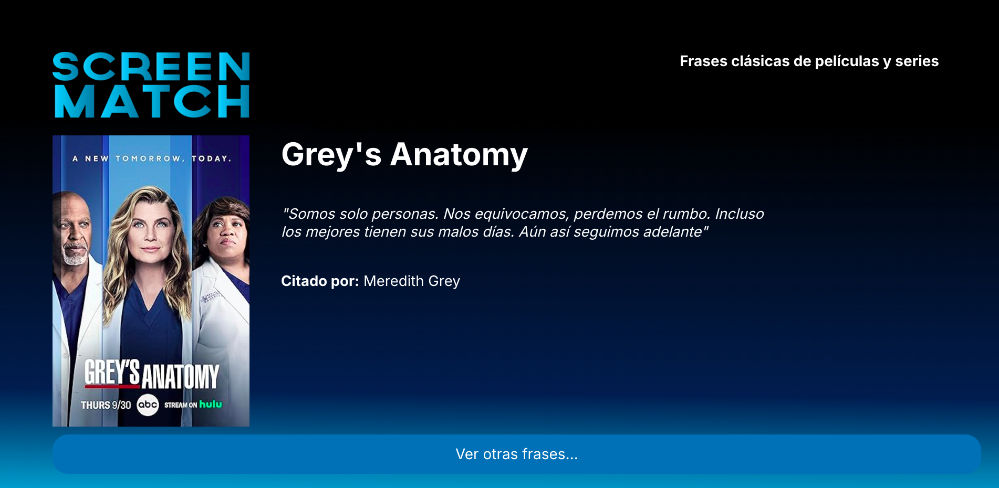
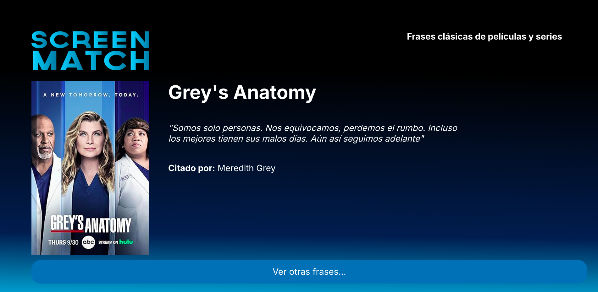
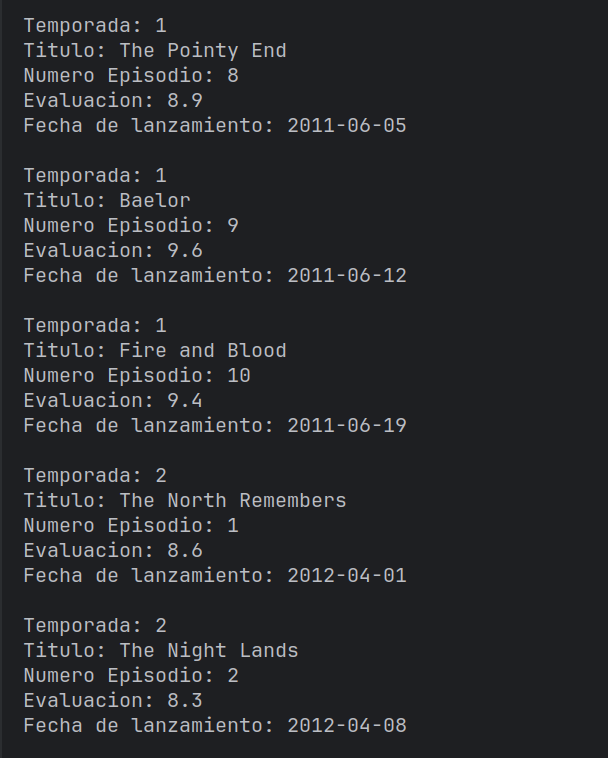
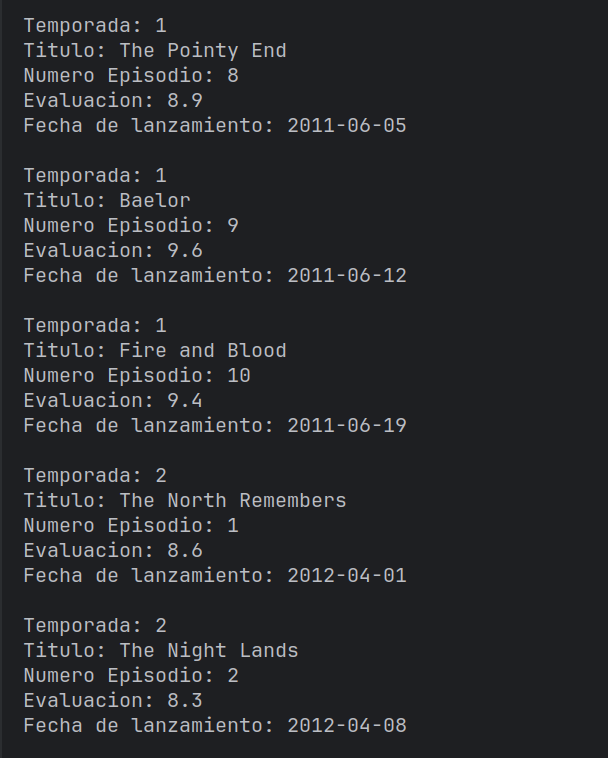

Acerca de
Acerca de
Desarrollador backend con experiencia en tecnologías como Java, Spring framework,
bases de datos relacionales(SQL) y sistemas operativos Linux y .
Actualmente, estoy cursando Ingeniería de Software en la Facultad de Ingeniería,
Diseño e Innovación del Politécnico Grancolombiano y tambien estoy especializandome en el area de desarrollo
Backend con Java y Spring Framework en el programa ONE(Oracle Next Education).
He complementado mi formación académica con diversos cursos en plataformas como
Platzi, Coursera y Alura, donde he profundizado en áreas clave del desarrollo
de software, incluyendo Java, Python, Linux, SQL y análisis de datos. Mi enfoque
autodidacta me lleva a explorar constantemente nuevas fuentes para desarrollar
soluciones óptimas y eficientes.
Mi interés en la programación comenzó a los 12 años, cuando dedicaba mucho tiempo a los
videojuegos. Me intrigaba entender cómo funcionaban, así que empecé a aprender por mi propia
cuenta como estaban construidos y que tecnologias utilizaban, empece a realizar modificaciones
en modelos, a crear configuraciones (archivos .cfg) para mejorar la experiencia de juego e
incluso a escribir scripts para automatizar algunas tareas. En ese momento, no sabía que lo
que estaba haciendo era programación, simplemente era mi forma de divertirme y mucho menos que se trataba de un trabajo con el que
podría ayudar a las personas y dedicarme profesionalmente.
Habilidades
- Java
- Programación Orientada a Objetos
- Programación Funcional
- Spring Framework
- Spring Boot
- Spring Data
- Maven
- JPA
- Hibernate
- RESTful APIs
- MySQL
- PosgreSQL
- MSSQL
- Sistemas Operativos (Linux - Windows)
- Redes Informaticas
- Python
- HTML/CSS
- JavaScript
- Git y GitHub
- Inteligencia Artificial
Educación

Politecnico Grancolombiano
En la carrera universitaria he adquirido conocimientos teóricos y prácticos en áreas clave como matemáticas, informática, diseño y trabajo en grupo. He adquirido habilidades fundamentales para analizar, diseñar y optimizar sistemas y procesos, apoyándome en principios científicos y tecnológicos. Además, alli se enfatiza el desarrollo de competencias en comunicación técnica, ética profesional y gestión de proyectos, preparándome para enfrentar los desafíos y responsabilidades del ejercicio profesional.

Oracle Next Education
En el programa ONE, completé una especialización en backend con Java y Spring framework, adquiriendo conocimientos avanzados en el desarrollo de aplicaciones robustas y escalables. Aprendí a crear APIs REST eficientes y seguras, implementar arquitecturas sólidas, gestionar bases de datos y aplicar principios de diseño orientado a objetos. Además, aprendi sobre programación funcional, enriqueciendo mi enfoque para resolver problemas y mejorar la eficiencia del código.
Graduado del programa ONE - Oracle Next Education


Platzi
En Platzi, he adquirido conocimientos específicos en desarrollo de software que me han preparado para crear aplicaciones robustas y escalables, emplear las mejores prácticas del sector y adaptarme a las demandas cambiantes de la industria tecnológica. La combinación de teoría y práctica me ha permitido enfrentar con confianza los retos del desarrollo de software y desarrollar una sólida lógica de programación.

Coursera
En Coursera, he profundizado en la programación orientada a objetos con Java, lo que me ha capacitado para diseñar soluciones estructuradas y eficientes. Gracias a una sólida combinación de teoría y práctica, ahora puedo enfrentar los desafíos del desarrollo de software con confianza y he fortalecido significativamente mi lógica de programación.
 Certificaciones
Certificaciones

 





 



 Proyectos
Proyectos
REST API Clinica Voll
Esta aplicación web está diseñada para una clínica y permite la gestión integral de médicos, pacientes y consultas,
ofreciendo todas las operaciones comunes para la persistencia de datos.
Descripción del Proyecto:
La aplicación permite realizar todas las operaciones CRUD (Crear, Leer, Actualizar, Eliminar) necesarias para la
gestión de la información en la clínica. Esto incluye:
Gestión de Médicos: Permite agregar, actualizar, listar y eliminar registros de médicos.
Gestión de Pacientes: Facilita la administración de los datos de los pacientes.
Gestión de Consultas: Permite registrar y gestionar las consultas médicas realizadas.
Herramientas y Tecnologías Utilizadas:
En este proyecto, utilicé Spring Initializr para crear un proyecto con Spring Boot, aprovechando su configuración
automática. Los detalles del stack tecnológico son los siguientes:
Lenguaje de Programación: Java
Gestor de Dependencias: Maven
Base de Datos: MySQL
Dependencias y Frameworks:
Spring Data JPA: Facilita el acceso y manipulación de la base de datos.
Spring Validation: Para validar los datos de entrada de forma sencilla.
Spring Starter Web: Permite la ejecución de aplicaciones web.
Devtools: Facilita el desarrollo en tiempo real, mostrando los cambios sin necesidad de reiniciar el servidor.
Lombok: Simplifica la generación de código repetitivo como constructores, getters y setters.
Este proyecto demuestra la integración de múltiples componentes de Spring Framework para desarrollar una API
REST robusta y eficiente, proporcionando una solución completa para la gestión de una clínica médica.

ScreenMatch Aplicacion Web
Esta es una aplicación web diseñada para permitir a los usuarios ver, buscar y gestionar
contenido multimedia, como películas y series. Los usuarios pueden interactuar con la
aplicación a través de una interfaz gráfica intuitiva o mediante su API.
El objetivo del proyecto era desarrollar una aplicación web robusta utilizando Java y
el framework Spring, crear una API RESTful y conectar una aplicación backend con una aplicación
frontend siguiendo las mejores prácticas de programación.
La aplicación fue desarrollada en Java con Spring framework y emplea PostgreSQL como
base de datos.En este proyecto se hizo un énfasis especial en las buenas prácticas de programación,
incluyendo:
Programación Orientada a Objetos (POO): Para asegurar un código modular y reutilizable.
Programación Funcional: Para mejorar la legibilidad y mantener un código más limpio y eficiente.
Patrón de Diseño MVC (Modelo-Vista-Controlador): Para separar la lógica de negocio,
la interfaz de usuario y la entrada del usuario.
Arquitectura de APIs RESTful: Para garantizar que la aplicación sea escalable, fácil
de mantener y que permita una comunicación eficiente entre los componentes del sistema.
Este proyecto forma parte de la especialización en Backend con Java y Spring framework del
programa ONE (Oracle Next Education).


Generador de frases - ScreenMatch
Esta es una API que genera frases aleatorias desarrollada en Java con Spring framework y base
de datos en postgreSQL.
El objetivo del proyecto era crear una API e integrar una aplicacion backend con una aplicacion frontend.
Este proyecto hace parte de la especializacion en backend con Java y Spring framework del programa
ONE(Oracle Next Education).
 


ScreenMatch Aplicacion de Consola
Proyecto desarrollado en Java con Spring Boot con conexion a base de datos en PostgreSQL
y haciendo integracion de Inteligencia Artifical para automatizar algunas tareas.
Este proyecto hace parte de la especializacion en Backend con Java del programa ONE (Oracle Next Education):
Esta aplicación desarrollada en Java con Spring Boot permite realizar la búsqueda y gestion de series mediante
la API de OMDb para obtener sus datos y haciendo integracion de Inteligencia Artificial
(Gemini - IA Google) para realizar diversas tareas que requieran automatizacion como traduccion de texto.
Con esta herramienta, los usuarios pueden buscar series por nombre, realizar búsquedas por fecha,
visualizar estadísticas de cada temporada, consultar el top 5 de episodios mejor calificados de una
serie, entre otras funciones similares. Cada busqueda que realiza el usuario se almacena en una tabla de la base de datos.
Además, se emplean técnicas de programación funcional y se aprovecha la API de Streams de Java,
permitiendo ejecutar operaciones intermedias y convertir los resultados en colecciones específicas
para facilitar el filtrado y búsqueda de series.
 


BookSmart
Esta aplicación, desarrollada en Java con Spring Boot, permite la búsqueda y gestión
de libros mediante el consumo de la API de Gutendex.
Entre las funcionalidades que ofrece se incluyen: la búsqueda de libros por título, la
visualización de top 10 libros más descargados, el acceso a estadísticas generales de la
aplicación y la posibilidad de explorar todos los libros disponibles.
El proyecto se ha creado utilizando Spring Initializr y emplea Maven como gestor de
dependencias. Además, se ha implementado el uso de streams para manipular colecciones
de datos y se ha aplicado programación funcional para asegurar las mejores prácticas
en el desarrollo.
Este proyecto forma parte de la formación en Spring en Alura.


Conversor de monedas
Este es un conversor de monedas desarrollado en Java que consume la API de ExchangeRate-API.
El sistema permite la conversión de monedas mediante pares: primero, el usuario ingresa el código de la moneda de
origen y luego el código de la moneda a la que desea convertir el valor introducido.
A continuación, se realiza una solicitud a la API, se convierte el valor dentro de la aplicación y se obtiene así el valor
convertido a la moneda deseada.
Esta aplicación ofrece la posibilidad de convertir un valor, consultar los códigos de las monedas disponibles y revisar
las consultas realizadas, las cuales se almacenan en un archivo con extensión .txt en el directorio de archivos generados.


Agenda de Contactos
Esta es una agenda de contactos desarrollada en Java y utilizando herramientas como Maven. Esta diseñada bajo el paradigma de
programación orientado a objetos, cuenta con conexion a base de datos MySQL y se aplican las cuatro(4) funciones basicas de la
persistencia de datos haciendo enfasis en el modelo de capas.
Entre sus funcionalidades destacan:
Crear Contactos: Permite añadir nuevos contactos a la agenda.
Visualizar tus contactos: Muestra una lista completa de todos los contactos almacenados.
Actualizar o modificar tus contactos: Ofrece la posibilidad de actualizar la información de un contacto existente.
Eliminar contactos: Permite borrar contactos de la agenda.


Simulador Cajero Automatico
Este es un simulador de un cajero automatico que ofrece funcionalidades completas
como registro e inicio de sesión de usuarios, consulta de saldo, depósito y
retiro de dinero.
Cada transacción incluye validación de datos para garantizar
la seguridad. Al finalizar cada operación, se genera automáticamente una factura
detallada que incluye los datos del usuario, el monto retirado y el saldo disponible.


Encriptador de texto
Este proyecto consiste en un encriptador de texto diseñado para transformar texto legible en una forma
codificada (texto cifrado), asegurando que no pueda ser comprendido por personas no autorizadas.
El objetivo del proyecto era desarrollar habilidades en lógica de programación mediante la creación
de una aplicación frontend capaz de codificar y decodificar mensajes. Además, se buscaba que la
aplicación fuera responsive.
Este proyecto es parte del primer desafío del programa ONE Oracle Next Education en Alura, utilizando
tecnologías como HTML, CSS y JavaScript.
Visitar Sitio.

Calculadora
Esta es una calculadora que permite realizar operaciones básicas y almacenarlas
temporalmente en un historial independiente para que el usuario las observe
mientras continúa con otras operaciones.
Además, incluye la opción de cambiar
el color de fondo y una sección con información sobre el desarrollador.
Desarrollada en Java Swing.
El objetivo del proyecto era mejorar mi lógica de programación replicando
la calculadora que viene por defecto en distribuciones Linux como Debian.


Formulario
Este formulario está diseñado para registrar datos y generar automáticamente un documento con la información proporcionada por el usuario. Está desarrollado utilizando Java Swing.


Juego
Un juego de lucha en 2D diseñado con HTML, CSS, y JavaScript, aprovechando la potencia
de Canvas para ofrecer una experiencia visual impresionante y dinámica.
En este universo de píxeles, los jugadores pueden seleccionar entre una variedad de personajes únicos, cada uno
con habilidades especiales, características distintivas, y poderes elementales que transforman cada combate en
una batalla estratégica y emocionante.